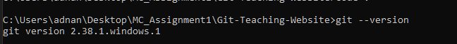
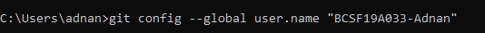
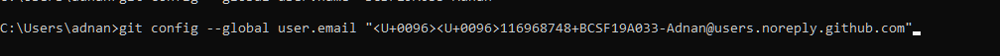
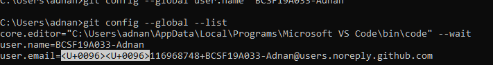
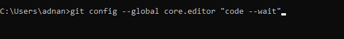

Git is an open source a version control system, developed by Linus Torvalds. Git is like an ultimate save button for your files/projects.
A save in Git records differences in the files and folders AND keeps a historical record of each save. This feature is a game changer. As an individual developer, Git enables you to review how your project grows and to easily look at or restore file states from the past. Once connected to a network, Git allows you to push your project to GitHub or other alternatives such as: Bitbucket, Beanstalk, or GitLab for sharing and collaborating with other developers.
First, lets clear that Git and Github are not related by any means. GitHub is a for-profit company that offers a cloud-based Git repository hosting service. Essentially, it makes it a lot easier for individuals and teams to use Git for version control and collaboration.
At a high level, GitHub is a website and cloud-based service that helps developers store and manage their code, as well as track and control changes to their code.
First you will need to install Git from this Link
Make sure you select your right OS and hardware to install. Once downloaded just install it and toy dont need to change any default settings, unless you really know what you are doing!
you can confirm your Git installation by openning Command Prompt and entering "git --version". if the output is differet reinsatll.
It is as simple as making any social media account, just follow on-screen instructions. Remember your userName and passwrod!
As you have installed Git, you are ready to use it on your local machine but before that lets connect your git account with GitHub. In later part we will learn how to actaully use Git and GitHub.
type the following Command:
git config --global user.name "Your userName" here userName is your GitHub profile userName, in double quotes. 
git config --global user.email "yourname@example.com" here in double quotes, enter your github email or email provided to you by github. (Im using email from Github.) 
Finally check, these configurations by entering: "git config --global --list" 
There are many other configurations, that you can setup, but above are the ones most needed. For example you can set VS Code as default editor for commit messages by entering: git config --global core.editor "code --wait" 